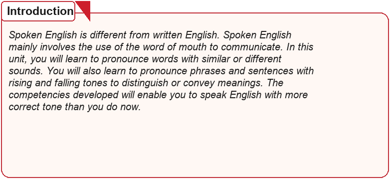
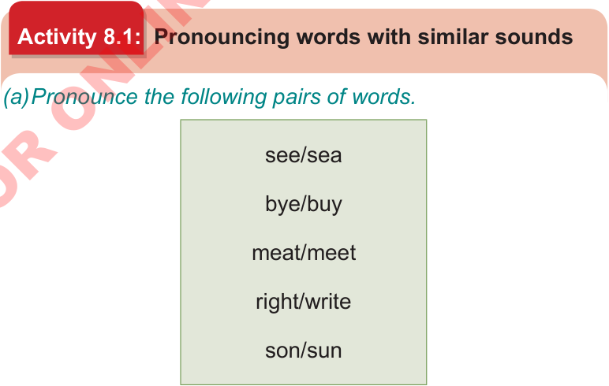

The basic features of spoken English and sign language

Introduction
Spoken English and sign language are different from written English. Spoken English uses words of mouth, while sign language uses hand shapes, movements and facial expressions to communicate. In this unit, you will learn to pronounce/sign words with similar or different sounds. You will also learn to pronounce/sign phrases and sentences using rising and falling tones or signing expression to distinguish or convey meanings. The competencies developed will enable you to communicate in English with more appropriate spoken tone or signing expression than you do now.

Think about the way you use spoken tone or signing expression to convey different meanings

Activity 8.1: Pronouncing words with similar sounds or signing different words
(a) Pronounce/sign the following pairs of words.
- see/sea
- bye/buy
- meat/meet
- right/write
- son/sun